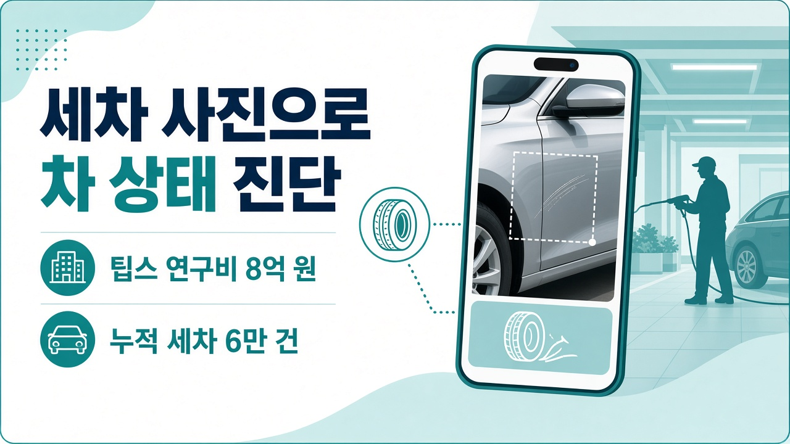
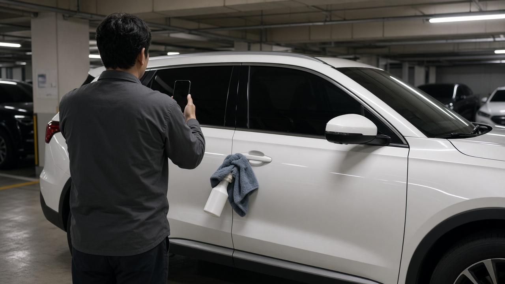

출장세차 앱 세진사, 세차하며 찍은 사진으로 차 상태 읽는 AI에 팁스 8억 원 확보

아파트 주차장에서 출장세차를 맡겨 보신 분이라면 세차가 끝난 뒤 사진 몇 장을 받아 보셨을 거예요. 앞으로는 그 사진이 단순한 작업 인증을 넘어 내 차의 흠집이나 타이어 상태를 알려 주는 자료가 될 수도 있습니다. 출장세차 앱 세진사가 서울대학교기술지주로부터 브릿지 투자를 받고 중소벤처기업부 팁스에도 선정됐다고 10월 12일 밝혔는데요. 무엇이 달라지는지, 지금 바로 쓸 수 있는 기능은 어디까지인지 정리해 봤습니다.
세진사가 이번에 받은 투자와 팁스 지원
세진사는 세차에 진심인 사람들이라는 이름의 차량관리 앱을 운영하는 회사로 대표는 윤용빈 씨입니다. 이번 투자는 해시드벤처스에서 받은 15억 원 규모 시드 투자에 이은 후속 브릿지 투자이고 금액은 공개되지 않았습니다. 팁스 운영사인 서울대기술지주가 투자와 함께 세진사를 팁스에 추천했고, 세진사는 투자금과 별개로 앞으로 2년 동안 8억 원의 연구개발 자금을 지원받게 됩니다. 이 8억 원은 투자금이 아니라 연구개발에 쓰는 지원금이라는 점이 다릅니다.
세차 사진이 차량 점검 자료가 되는 방식
이번 팁스 과제의 핵심은 세차 현장에서 나오는 데이터를 쓰는 인공지능 차량관리 기술입니다. 세차 크루가 작업하면서 찍은 차량 이미지와 작업 이력을 분석해 외관 손상과 관리가 필요한 부분을 자동으로 찾아내는 것이 목표예요. 엔진오일, 배터리, 타이어 같은 항목의 특이사항도 분석 대상으로 제시됐습니다. 이렇게 차마다 쌓인 상태 이력을 바탕으로 고객별로 세차 시점과 정비 시점을 먼저 제안하겠다는 계획입니다. 회사 설명으로는 세차가 차량관리 가운데 가장 자주 반복되는 일이라서 따로 진단 장비를 설치하지 않아도 같은 차의 데이터를 꾸준히 모을 수 있다고 합니다.
아직 개발 단계인 기능과 지금 쓸 수 있는 서비스
여기서 헷갈리지 않으셔야 할 부분이 있습니다. 사진으로 차 상태를 자동 판별하는 기능과 맞춤 추천 기능은 이번 팁스 과제로 개발하는 목표 단계이고 현재 상용 서비스에 모두 적용된 것은 아닙니다. 또 외관 사진만으로 엔진오일이나 배터리 같은 내부 항목을 확인하기는 어려워서 추가 데이터와 점검 방식은 앞으로 구체화가 필요하다는 지적도 함께 나왔습니다. 지금 앱에서 이용할 수 있는 것은 출장세차와 엔진오일, 타이어 교체 같은 정비 서비스입니다.

세차업계가 눈여겨볼 숫자들
세진사는 2023년 8월 앱 예약 출장세차로 시작했습니다. 앱으로 예약하면 전문 크루가 고객 차가 주차된 곳으로 찾아가 세차하는 구조예요. 서울대기술지주 소개 자료에는 오프라인 매장 없이 긱워커로 운영하고 물을 쓰지 않는 무수세 공법으로 아파트나 회사 주차장을 찾아간다고 설명돼 있습니다. 올해 9월 기준 누적 세차는 6만 건을 넘었고 활동 크루도 4,000명을 넘어섰습니다. 월별 세차 건수와 정비 건수가 함께 늘고 있다는 것이 회사 설명입니다. 세차장을 운영하거나 창업을 준비하는 입장이라면 세차를 차량관리 전체로 이어지는 첫 접점으로 보는 흐름이라는 점에서 참고할 만합니다.
투자금과 연구비는 어디에 쓰이나
투자금은 고객 확보와 운영 인프라 고도화, 핵심 인력 채용에 쓰고, 팁스 연구개발 자금은 차량 상태 식별 모델과 맞춤 추천 체계 개발, 제품과 인공지능 엔지니어 채용에 투입한다고 밝혔습니다. 출장세차부터 상태 진단, 정비까지 앱 하나로 해결하는 종합 차량관리 플랫폼으로 키우겠다는 목표예요. 윤용빈 대표는 매번 세차할 때마다 쌓이는 데이터로 고객에게 필요한 차량관리를 먼저 알려 주는 서비스를 만들겠다고 말했습니다.
참고한 기사: 스타트업투데이 세진사 브릿지 투자 유치 세차 데이터 기반 차량관리 기술 개발 2026년 10월 12일, 머니투데이 세차에서 AI 차량관리로 세진사 시드 브릿지 투자 유치 2026년 10월 13일, 팁스뉴스 2026년 10월 12일, 서울대학교기술지주 포트폴리오 소개
태그
세진사 출장세차 세차에진심인사람들 팁스선정 서울대기술지주 세차스타트업 AI차량관리 아파트출장세차 무수세세차 세차창업